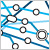

当在用户机器上安装或卸载程序时，能够执行命令将是很有用的。 例如，您可能需要编辑一个系统配置文件以启用新的服务， 或者需要定义一个新用户以拥有正在安装的程序的所有权。
为了最有效地使用本文中的建议和示例，请先阅读本系列文章的 第 1 部分和 第 2 部分， 它们分别向您演示了如何使用 RPM 以及如何分发您的产品。
安装和卸载脚本的工作原理
安装和卸载脚本看起来很简单，但它们工作原理中的一些意外可能会引起大问题。
这里是一些基本信息。可以将下列四节中的任意一个添加到 .spec 文件， 它列出了在您的包安装期间各个点上运行的 shell 脚本：
- %pre
- 在安装包之前运行
- %post
- 在安装包之后运行
- %preun
- 在卸载包之前运行
- %postun
- 在卸载包之后运行
尤其要注意
%install 与这些节之间的差异。构建 RPM 时，
%install 在开发机器上运行；
它应该将产品安装在开发机器上或安装到一个构建根目录中。 另一方面，这些节指定当用户正在安装或卸载您的 RPM
包时将在
用户的机器上运行什么。
这里有一个示例，是在前文基础上建立的。我们要使用
install-info 将 GNU indent 的 info 文件添加到目录中。
清单 1. indent-4.spec
# Simplistic example of install scripts - do not use
Summary: GNU indent
Name: indent
Version: 2.2.6
Release: 4
Source0: %{name}-%{version}.tar.gz
License: GPL
Group: Development/Tools
BuildRoot: %{_builddir}/%{name}-root
%description
The GNU indent program reformats C code to any of a variety of
formatting standards, or you can define your own.
%prep
%setup -q
%build
./configure
make
%install
rm -rf $RPM_BUILD_ROOT
make DESTDIR=$RPM_BUILD_ROOT install
%post
if [ -x /sbin/install-info ]; then
/sbin/install-info /usr/local/info/indent.info /usr/local/info/dir
fi
%preun
if [ -x /sbin/install-info ]; then
/sbin/install-info --delete /usr/local/info/indent.info /usr/local/info/dir
fi
%clean
rm -rf $RPM_BUILD_ROOT
%files
%defattr(-,root,root)
/usr/local/bin/indent
%doc /usr/local/info/indent.info
%doc %attr(0444,root,root) /usr/local/man/man1/indent.1
%doc COPYING AUTHORS README NEWS请注意，在尝试使用
install-info 工具之前，首先对它进行检查。我们不希望只是因为我们不能提供至产品文档的链接而使安装失败。
但也有可能在某种情况下您希望安装过程失败。一种好的技术是使用
%pre 脚本来检查安装前提条件，它们比 RPM 可以直接支持的更复杂。 如果不符合前提条件，那么脚本以非零状态退出，而且 RPM 不会继续安装。
另外请注意，我们必须小心地使用卸载脚本来撤销安装脚本。
没有那么简单：升级使每件事情都变得复杂
现在，让我们着手升级。如果用户只安装和删除您自己的包，那么前面节中的指令将正常工作；但在升级期间，它们会完全失效。
以下是 RPM 如何执行升级：
- 运行新包的 %pre
- 安装新文件
- 运行新包的 %post
- 运行旧包的 %preun
- 删除新文件未覆盖的所有旧文件
- 运行旧包的 %postun
如果我们使用前面的示例来升级，那么 RPM 最后将运行 %postun 脚本， 它将除去我们在安装脚本中所做的所有工作！使用 RPM 的一般开发人员可能不会想到这一点。 我不会尝试解释其原因，只是解释您必须为此做点什么。
相当幸运的是，在一定程度上，脚本有一种方法可以告之是否正在安装、删除或升级包。每个脚本都被传递单一命令行参数 ― 一个数字。 这应该告诉脚本 在当前包完成安装或卸载之后将安装多少个包的副本。
只查看在各种情况下传递的值或许更容易，而不是尝试计算它。
这里是在安装期间传递的实际值：
- 运行新包的 %pre (1)
- 安装新文件
- 运行新包的 %post (1)
这里是在升级期间传递的值：
- 运行新包的 %pre (2)
- 安装新文件
- 运行新包的 %post (2)
- 运行旧包的 %preun (1)
- 删除新文件未覆盖的任何旧文件
- 运行旧包的 %postun (1)
这里是在删除期间传递的值：
- 运行旧包的 %preun (0)
- 删除文件
- 运行旧包的 %postun (0)
可以通过将类似下例的一些东西添加到您的包中来自己测试它。 然后创建一个带稍高发行版号的新包，安装第一个，然后升级到第二个，最后卸载它，以查看所有可能性。 当然，在信任的公共社区上发布任何 RPM 之前，您总是要对它进行几次这样的尝试。
清单 2. 脚本执行的测试顺序和参数
%pre
echo This is pre for %{version}-%{release}: arg=$1
%post
echo This is post for %{version}-%{release}: arg=$1
%preun
echo This is preun for %{version}-%{release}: arg=$1
%postun
echo This is postun for %{version}-%{release}: arg=$1这里是另一个示例，这次正确地处理升级过程：
清单 3. indent-5.spec
Summary: GNU indent
Name: indent
Version: 2.2.6
Release: 5
Source0: %{name}-%{version}.tar.gz
License: GPL
Group: Development/Tools
BuildRoot: %{_builddir}/%{name}-root
%description
The GNU indent program reformats C code to any of a variety of
formatting standards, or you can define your own.
%prep
%setup -q
%build
./configure
make
%install
rm -rf $RPM_BUILD_ROOT
make DESTDIR=$RPM_BUILD_ROOT install
%post
if [ "$1" = "1" ] ; then # first install
if [ -x /sbin/install-info ]; then
/sbin/install-info /usr/local/info/indent.info /usr/local/info/dir
fi
fi
%preun
if [ "$1" = "0" ] ; then # last uninstall
if [ -x /sbin/install-info ]; then
/sbin/install-info --delete /usr/local/info/indent.info /usr/local/info/dir
fi
fi
%clean
rm -rf $RPM_BUILD_ROOT
%files
%defattr(-,root,root)
/usr/local/bin/indent
%doc /usr/local/info/indent.info
%doc %attr(0444,root,root) /usr/local/man/man1/indent.1
%doc COPYING AUTHORS README NEWS现在，仅当完全删除这个包时才会除去 info 链接。
触发器 — 在安装或卸载其它包时运行脚本
假设在安装或卸载 其它包时要运行您包中的一些代码。 可以用 触发器（trigger）脚本来完成这一任务。
您为什么要这样做？通常是因为您的包使用一个或多个其它包的服务，或者提供服务给一个或多个其它包。
这里有一个示例。假设您正在为 Emacs 和 Xemacs 编辑器打包一个极好的附加工具。它可以与其中任何一个或两个编辑器一起工作， 但根据所安装的编辑器，需要做一些少量的配置。
安装时，可以对 Emacs 和 Xemacs 进行测试，并配置您的工具以使可用编辑器可以访问它。 但是，如果用户稍后安装 Xemacs，那么会发生什么情况呢？您的工具在 Xemacs 中不可用，除非用户卸载并重新安装您的工具。 如果您的包可以告诉 RPM，“让我知道是否安装了 Xemacs”，这是否会更好呢？
这是触发器脚本的思想。可以将它添加到 .spec 文件中：
清单 4. 触发器示例
%triggerin -- emacs # Insert code here to run if your package is already installed, # then emacs is installed, # OR if emacs is already installed, then your package is installed %triggerin -- xemacs # Insert code here to run if your package is already installed, # then xemacs is installed, # OR if xemacs is already installed, then your package is installed %triggerun -- emacs # insert code here to run if your package is already installed, # then emacs is uninstalled %triggerun -- xemacs # insert code here to run if your package is already installed, # then xemacs is uninstalled %postun # Insert code here to run if your package is uninstalled
触发器脚本被传递了 两个参数。第一个参数是当触发器脚本完成运行时将安装的 您的包的实例数。第二个参数是当触发器脚本完成运行时将安装的 要触发的包的实例数。
这里是 RPM 升级期间脚本执行和文件安装及卸载的完整顺序，它来自 RPM 分发版中的
triggers 文件：
清单 5. 脚本顺序
new-%pre for new version of package being installed
... (all new files are installed)
new-%post for new version of package being installed
any-%triggerin (%triggerin from other packages set off by new install)
new-%triggerin
old-%triggerun
any-%triggerun (%triggerun from other packages set off by old uninstall)
old-%preun for old version of package being removed
... (all old files are removed)
old-%postun for old version of package being removed
old-%triggerpostun
any-%triggerpostun (%triggerpostun from other packages set off by old un
install)高级脚本编制
备用解释器
通常，所有安装时脚本和触发器脚本都是使用
/bin/sh shell 程序运行的。如果您更喜欢另一个脚本语言，比方说
Perl，那么可以通过将
-p interpreter 添加到脚本行来告诉 RPM 应该使用另一种解释器运行您的脚本。例如：
清单 6. 备用解释器示例
%post -p /usr/bin/perl # Perl script here %triggerun -p /usr/bin/perl -- xemacs # Another Perl script here
请注意，这
不适用于 RPM 的构建时脚本，如
%install 。
RPM 变量
RPM 在将 RPM 变量存储到 RPM 包文件之前先在您的脚本中扩充它们，有时候这是有用的。 例如，可以在 .spec
文件顶部附近定义您自己的参数，然后在整个 .spec 文件 ― 甚至在您的脚本中使用
%{variable_name}
引用它们：
清单 7. RPM 变量示例
...
%define foo_dir /usr/lib/foo
...
%install
cp install.time.message $RPM_BUILD_ROOT/%{foo_dir}
%files
%{foo_dir}/install.time.message
%post
/bin/cat %{foo_dir}/install.time.message要避免的事情
您可能会在安装时试图做一些事情，但结果会证明这是一个坏主意。 例如，与用户交互的任何尝试或许不能很好地工作。RPM 被设计成在无需用户出现的情况下允许进行批处理安装。 如果在安装期间 RPM 包停下来并提出问题，而没有人看到这个问题，那么安装将一直挂起。
您可能要避免的另一件事情是启动任何服务。 在完整安装期间，您不能确定程序所需的每样东西是否已经在那里（例如，可能还没有任何网络）； 另外，如果在完整操作系统安装期间每个 RPM 服务都尝试启动，那么整个安装过程大概会花很长时间。 这种情况下您可以做的就是打印消息，告诉用户有关任何所需配置或需要启动的服务的信息。 如果用户正在手工安装您的 RPM 包， 那么他或她将看到这些消息；如果它是较大批处理安装的一部分，那么它不会损害任何东西， 机器几乎肯定在结束时重新引导，启动您的服务。
要记住的事情
如果您的包安装了 init 脚本，则可以使用
chkconfig 来安排将在适当运行级别上启动和停止的服务。
虽然可以通过将必需的符号链接直接安装为包的一部分来实现同一件事情， 但要使它们恢复正常会有很多麻烦，您可能宁愿使用
chkconfig 。
为了安全起见，许多服务在一个特定的用户标识下运行； 如果您的服务是这样的话，当系统上不存在该用户时，您需要在系统上创建它。
如果您的包安装了任何 GNU info 文件，那么在 Info 目录中将看不到它们，除非在安装时使用
install-info 工具添加它们。
当然，在卸载之前，必须试图停止您的包可能正在运行的任何服务（但如果服务不在运行，请确保卸载不会失败）。
当然，在卸载时，应该将您在安装时可能对系统做的大多数更改恢复成原来状态。 但稍微考虑一下您的操作；例如，卸载 RPM 包时不应该意外地删除任何用户创建的文件。 所以，请不要尝试除去用户标识或删除整个目录树，这样可能会好一些。
参考资料
- 您可以参阅本文在 developerWorks 全球站点上的 英文原文.
- 本 RPM 系列文章中的第 1 部分介绍了用 RPM 构建软件包的过程， 第 2 部分说明了如何在不具备 root 权限的情况下构建 RPM、给软件打补丁和分发 RPM。
- 一些 Linux 分发版（distribution）将 Debian 的 APT 工具用于包管理。
- RPM 网站上有指向许多有用资源的链接。RPM 电子邮件列表是提问题的好地方。
- Maximum RPM 是一本关于使用 RPM 的书。它相当过时了，但现在正处在更新中。
- RPM HOWTO 也正变得有些过时了。它讲述了一些和本文相同的基础知识。
- Eric S. Raymond 的 Software Release Practice HOWTO 文档并不是专门针对 RPM 或 Linux。但它在如何发布软件以方便用户使用和方便程序员提供修正和完善方面，有很多好的技巧。
- 自由软件基金会（The Free Software Foundation）是一个提供 GNU Indent 和许多其它有用软件包（包括 glibc 和 emacs）的组织。
- 浏览 developerWorks上 更多 Linux 参考资料。
- 请浏览 developerWorks上 更多开放源码参考资料。
条评论
在检索评论时出错，请稍后刷新。 |

IBM PureSystems
IBM PureSystems™ 系列解决方案是一个专家集成系统
- 
developerWorks 学习路线图
通过学习路线图系统掌握软件开发技能

软件下载资源中心
软件下载、试用版及云计算
请 登录 或 注册 后发表评论。
注意：评论中不支持 HTML 语法